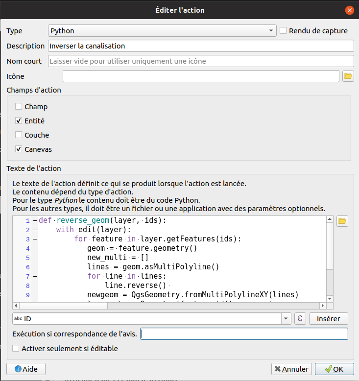

Table of content
Les actions
- Pour connaître le principe des actions dans QGIS, il faut se référer au manuel de QGIS :
- On souhaite pouvoir faire notre propre action pour inverser le sens d'une ligne, par exemple une rivière.
- Ajouter la couche
D_OSM_HYDROGRAPHIE/CANALISATION_EAU.shp, mais utilisons le script ci-dessous pour commencer sur un cas simple. - Faire un style rapide pour mettre en évidence le sens de la ligne à l'aide d'une
Ligne de symboledans l'ongletSymbologie.
# Notation pour ajouter des attributs en créant une couche mémoire
river = QgsVectorLayer('MultiLineString?crs=epsg:2154&field=id:integer&field=name:string(20)&index=yes', 'Rivers', 'memory')
QgsProject.instance().addMapLayer(river)
with edit(river):
feature = QgsVectorLayerUtils.createFeature(river)
feature.setAttribute('id', 0)
feature.setAttribute('name', 'Une rivière')
geom = QgsGeometry.fromMultiPolylineXY(
[
[QgsPointXY(1, 1), QgsPointXY(2, 2), QgsPointXY(3, 2), QgsPointXY(4, 1)]
])
feature.setGeometry(geom)
river.addFeature(feature)
extent = river.extent()
canvas = iface.mapCanvas()
canvas.setExtent(extent)
canvas.refresh()
Les actions par défaut
- Dans la fenêtre des propriétés d'une couche vecteur, aller dans l'onglet
Actions. - Cliquer sur le bouton
Créer les actions par défaut. - Observons quelques actions pour comprendre le fonctionnement.
Notre propre action
- Commençons un nouveau par un script Python classique, laissons de côté les actions pour le moment.
- Écrire une fonction qui se charge d'inverser une ligne. Cette fonction prend en paramètre la couche vecteur et une liste d'ID des entités.
- Il faut penser à vérifier le type exact de géométrie de nos lignes, dans les propriétés de la couche.
def reverse_geom(layer: QgsVectorLayer, ids: list):
""" Inverser le sens des différentes entités dans la couche layer.
ids est une liste comportant les IDs des entités à inverser.
"""
pass
Le mot-clé pass est juste une instruction Python qui ne fait strictement rien mais qui permet de rendre
une ligne de code valide en respectant l'indentation. Vous pouvez la supprimer dès qu'il y a du code.
Il faut :
- Utiliser une session d'édition
- Récupérer la géométrie, tenir compte qu'il s'agit d'une multi-ligne
- Appliquer la fonction
reverseen Python -
Utiliser
QgsVectorLayer.changeGeometry()pour changer la géométrie d'un objet -
Solution :
def reverse_geom(layer: QgsVectorLayer, ids: list):
""" Inverser le sens des différentes entités dans la couche layer.
ids est une liste comportant les IDs des entités à inverser.
"""
with edit(layer):
for feature in layer.getFeatures(ids):
geom = feature.geometry()
lines = geom.asMultiPolyline()
for line in lines:
line.reverse()
new_geom = QgsGeometry.fromMultiPolylineXY(lines)
layer.changeGeometry(feature.id(),new_geom)
layer = iface.activeLayer()
ids = layer.selectedFeatureIds()
reverse_geom(layer, ids)
Incorporons ce code dans une action et adaptons le un peu :

def reverse_geom(layer, ids):
with edit(layer):
for feature in layer.getFeatures(ids):
geom = feature.geometry()
lines = geom.asMultiPolyline()
for line in lines:
line.reverse()
new_geom = QgsGeometry.fromMultiPolylineXY(lines)
layer.changeGeometry(feature.id(), new_geom)
layer = QgsProject.instance().mapLayer('[% @layer_id %]')
reverse_geom(layer, '[% $id %]')
On peut désormais cliquer sur une ligne pour automatiquement inverser une ligne.
Le code de l'action est enregistré dans le style QML de la couche vecteur. Il peut donc être partagé avec d'autres utilisateurs qui ne connaissent pas Python